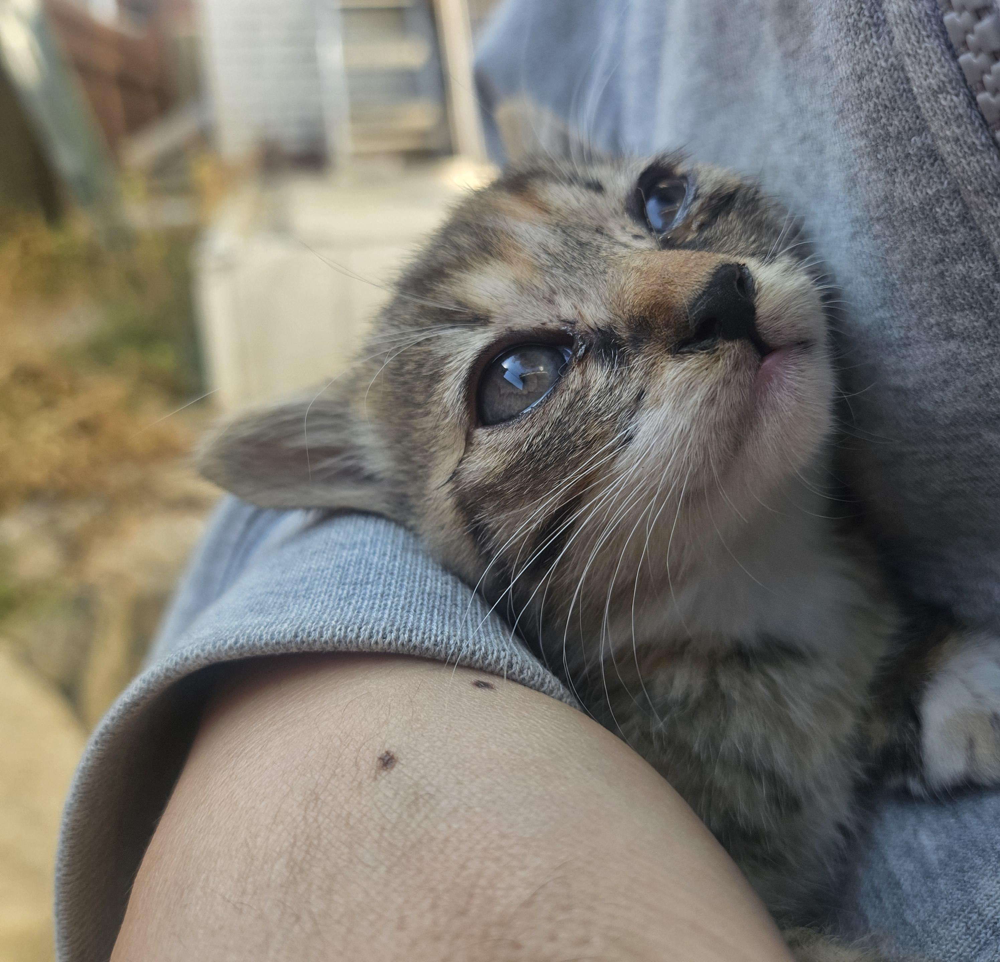
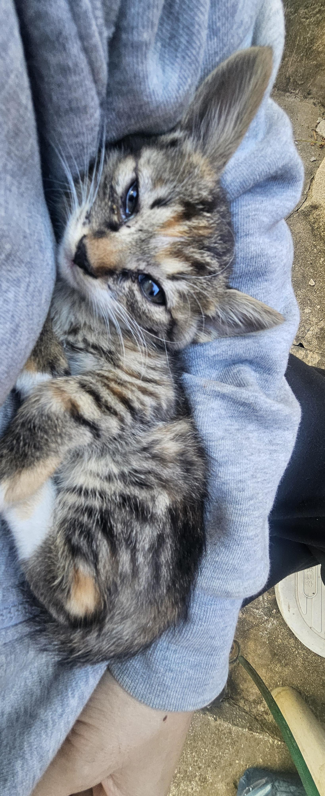
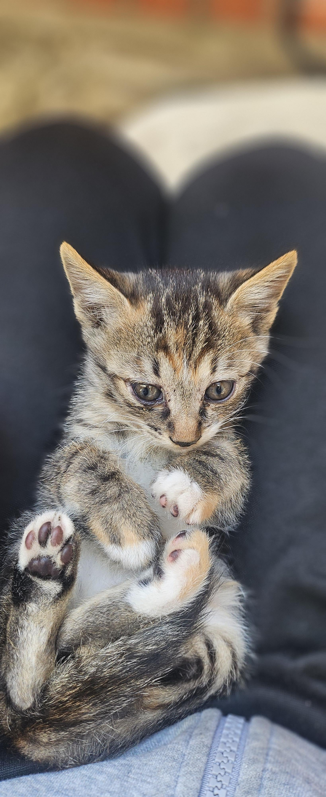
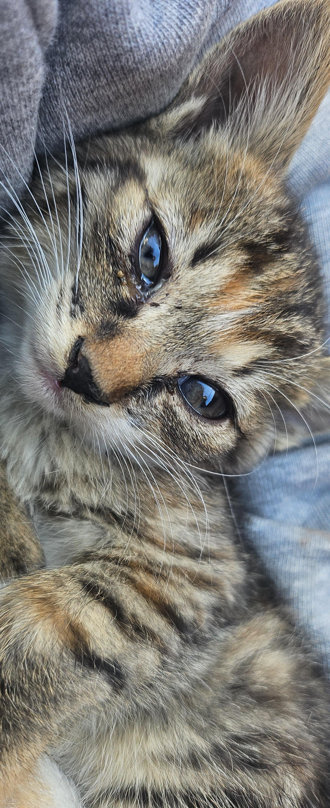
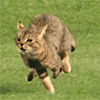

길냥이가 집 구석에서 새끼 5마리 낳았다.
매일 죽었는지 관찰 중.




길냥이가 집 구석에서 새끼 5마리 낳았다.
매일 죽었는지 관찰 중.
고양이 사진은 최소 5장 이상 첨부해야 한다.

영상어디갔냐
잘키워ㅠㅠ
여섯마리 다 키울거지?
새끼치곤 좀 컸네 털도 안세우고 평소에 밥 줌?
밥 주면 안 떠날까봐
그냥 매일 쓰담쓰담만 해 줌
애들이 하악질 안하는게 신기하네
사람 손타서 안가는거아녀?
쓰담쓰담 한 순간 니꺼여
난 걍 주워다 키우는중인데
잘크는중

미묘다 미묘
오억년만에 개추눌럿다,,
아이고 구엽소 욘석
우이이 아이이 고양이같다
길냥이새끼 손으로만지면 냄새배서 애미가 버릴수도있음

포근하게 껴안겨있는거 너무 귀엽네. 눈매봐 ㅋㅋㅋ
이제 키워라 ㅋㅋㅋㅋ
애옹
길냥이치고 엄청 잘생겼네
키워야겠죠?
너 간택당한거야
와 졸귀다 ..


폭 안겨있네 ㅋㅋㅋ
길냥이가 뽀송하네 어미가 잘 관리해주나보다ㅋㅋ
날이 확 추워졌던데 독립할 때 쯤이 가장 춥겠다 첫 겨울나기 고달플듯
ㅋㅋㅋ 냄새 뭍힌순간 니새키임 걍 데려다 키워 애기때 유대 잘쌓으면 개냥이됨
고놈 참 잘생겼네
미끼를 물어버린것이여…!!
순하게 생겼네 ㅋㅋㅋ
엄청 이쁘다 야
아련하네 ㄷㄷ
죽었는지 관찰 ㄷㄷ
사람 냄새 베면 어미가 버리는 경우도 있다던데
키울 생각 아니면 먹이, 쓰다듬기는 안 했어야 함
만졌으면 길러야해